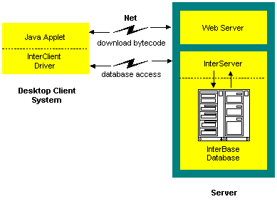

Once you've developed your InterClient programs, there are two ways to
deploy them: as Java applets embedded on an HTML page, or as stand-alone
all-Java applications running on a client system.
Deploying InterClient Programs as Applets

Figure 4 - Using Applets to access InterBase
InterClient programs can be implemented as Java applets that are downloaded
over the Internet as part of an HTML web page. An InterClient applet uses
JDBC to provide access to a remote InterBase server in the following manner:
A user accesses the HTML page where the InterClient applet resides.
The applet bytecode is downloaded to the client machine from the Web server.
The applet code executes on the client machine, causing the InterClient
package (i.e., the InterClient classes and the InterClient driver) to be
downloaded from the Web server.
The InterClient driver communicates with the InterServer process, which
in turn establishes a connection to the InterBase server.
The InterBase server executes SQL statements and returns the results to
the InterServer, which then passes on the results to the user running the
InterClient applet.
When the applet is finished executing, the applet itself and the InterClient
driver and classes disappear from the client machine.
Client Components
In order to run InterClient applets, the client machine must have the following
software loaded:
A Java-enabled browser
Server Components
The software that resides on the server system includes:
The InterServer process
The InterBase server process
The Web server process
The program applets
The InterClient classes
The server software may be distributed on separate server machines.
Deploying InterClient Programs as Applications
Figure 5 - Using stand-alone Java applications to access InterBase
InterClient programs can also be deployed as stand-alone Java applications.
These applications both reside on and execute from the client machine;
they're not downloaded from a server. The most common use for these types
of Java applications is within a company or corporate "Intranet," where
the application can access corporate database servers on a local or wide
area network. However, you can also use Java applications to access databases
via the Internet.
Client Components
To run Java applications using InterClient, the software that must be installed
on the client system includes:
The Java programs (compiled bytecode)
The InterClient package, including the driver and all of the classes
A Java Runtime Environment (JRE)
Server Components
The server components that must be installed include: